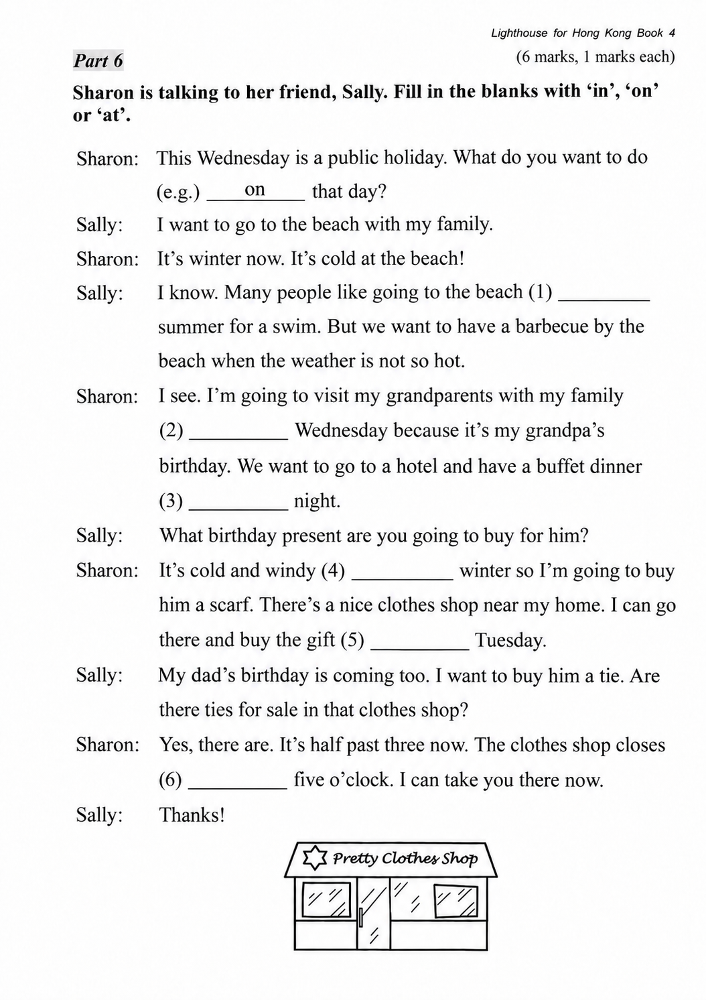
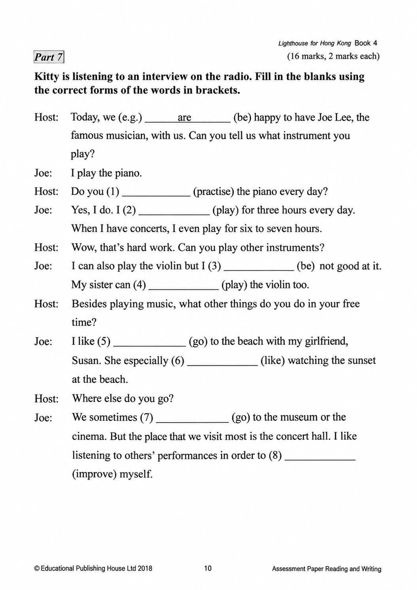
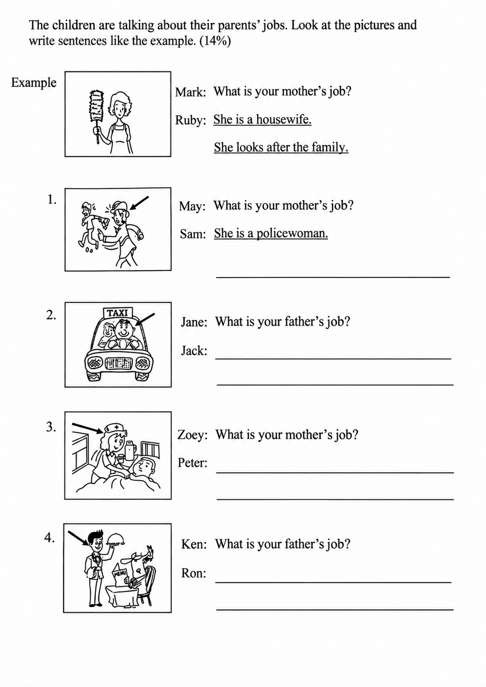
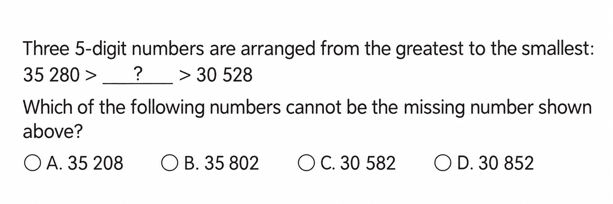
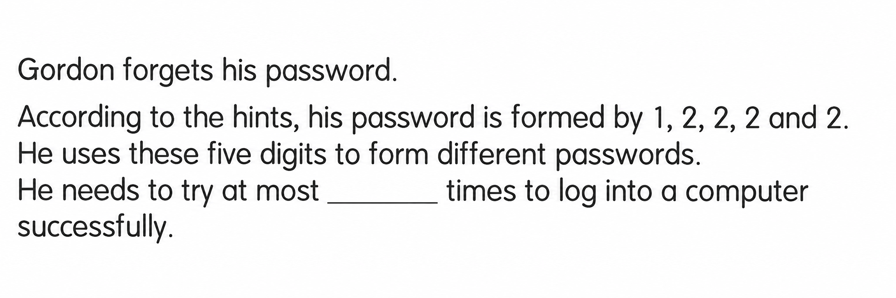

已掌握
| # | 中文意思 | 例句/提示 | 英文默写 | 已掌握 |
|---|---|---|---|---|
| noun 名词 | ||||
| 1 | 标志 | Read the carefully. | ||
| 2 | 班长 | The helps the teacher. | ||
| 3 | 作家 | The writes stories. | ||
| 4 | 花 | This is red. | ||
| 5 | 角色 | I have a in the play. | ||
| 6 | 售货员 | The helped me find a notebook. | ||
| verb 动词 | ||||
| 7 | 邀请 | I my friend to my home. | ||
| 8 | 采摘；挑选 | We apples from the tree. | ||
| 9 | 匹配；比赛 | Please each word to the correct picture. | ||
| 10 | 发送 | I will you a postcard. | ||
| 11 | 挖 | The dog can a hole. | ||
| phrase 短语 | ||||
| 12 | 照顾 | I my little sister. | ||
| adjective 形容词 | ||||
| 13 | 著名的 | This is a place. | ||
| 14 | 粗鲁的 | Do not be . | ||
| 15 | 饥饿的 | I am now. | ||
| 16 | 相同的 | We are in the class. | ||
| 17 | 正确 | This answer is . | ||
| verb phrase 动词短语 | ||||
| 18 | 讲故事 | I to my little brother. | ||
| adverb 副词 | ||||
| 19 | 经常 | We play in the park. | ||
| uncategorized 未分类 | ||||
| 20 | 九月 | School starts in . | ||
| # | 单词/词组 | 中文意思 | 例句/说明 | 已掌握 |
|---|---|---|---|---|
| adjective 形容词 | ||||
| 1 | cuddly | The toy bear is very cuddly. | ||
| 2 | newborn | The newborn baby is small. | ||
| 3 | silly | Billy made a silly mistake. | ||
| 4 | rich | Now Billy was rich. | ||
| noun 名词 | ||||
| 5 | beach | I want to go to the beach. | ||
| 6 | buffet | We had lunch at a buffet. | ||
| 7 | resident | He is a resident of this city. | ||
| 8 | slide | The child goes down the slide. | ||
| 9 | sculpture | We saw a stone sculpture in the park. | ||
| 10 | knowledge | Books give us knowledge. | ||
| 11 | lollies | The children bought some lollies. | ||
| noun phrase 名词短语 | ||||
| 12 | police dog | The police dog is clever. | ||
| 13 | role model | She is a role model for younger students. | ||
| 14 | Open Day | Open Day is on 1st March. | ||
| 15 | lemon tea | I'd like two cups of lemon tea, please. | ||
| 16 | a bowl | Put the egg into a bowl. | ||
| verb 动词 | ||||
| 17 | reply | Please reply to my email. | ||
| 18 | collect | I collect stamps. | ||
| 19 | roll | The ball can roll. | ||
| phrase 短语 | ||||
| 20 | simple present tense | The sentence "I walk to school" is in the simple present tense. | ||
| verb phrase 动词短语 | ||||
| 21 | play basketball | Can you play basketball? Yes, I can. | ||
| 22 | be interested in | I am interested in music. | ||
| 23 | take photos | We take photos at the farm. | ||
| 24 | reading magazines | She likes reading magazines. | ||
| 25 | sing carols | We sing carols at Christmas. | ||
| 26 | have a birthday party | I want to have a birthday party at home. | ||
| 27 | blow out the candles | I blow out the candles on my birthday cake. | ||
| noun/verb 名词/动词 | ||||
| 28 | survey | We do a survey in class. | ||
| uncategorized 未分类 | ||||
| 29 | shout | Please do not shout in the library. | ||
| 30 | cartoon | We watched a funny cartoon. | ||
| # | 中文意思 | 例句/提示 | 英文默写 | 已掌握 |
|---|---|---|---|---|
| time/date 时间日期 | ||||
| 1 | 三月 | is the third month. | ||
| 2 | 六月 | is the sixth month. | ||
| 3 | 十月 | is the tenth month. | ||
| 4 | 十一月 | is the eleventh month. | ||
| 5 | 星期五 | is a weekday. | ||
| directions 方向 | ||||
| 6 | 南 | is a direction. | ||
| numbers 数字 | ||||
| 7 | 2 | is 2. | ||
| 8 | 14 | is 14. | ||
| 9 | 16 | is 16. | ||
| 10 | 20 | is 20. | ||
| 11 | 40 | is 40. | ||
| 12 | 70 | is 70. | ||
| ordinal numbers 序数 | ||||
| 13 | 第三 | This is the shape. | ||
| solid shape 立体图形 | ||||
| 14 | 圆锥 | A has one curved face. | ||
| plane shape 平面图形 | ||||
| 15 | 四边形 | A has four sides. | ||
| # | 单词/词组 | 中文意思 | 例句/说明 | 已掌握 |
|---|---|---|---|---|
| geometry 几何 | ||||
| 1 | angle | An angle is formed by two rays with the same endpoint. | ||
| 2 | right angle | A right angle is 90 degrees. | ||
| 3 | acute angle | An acute angle is smaller than a right angle. | ||
| 4 | obtuse angle | An obtuse angle is greater than 90 degrees and less than 180 degrees. | ||
| 5 | grid | A grid helps us find positions. | ||
| 6 | line segment | Draw a line segment. | ||
| 7 | adjacent side | These are adjacent sides. | ||
| question word 题目词 | ||||
| 8 | compare | We compare two numbers. | ||
| 9 | calculate | Calculate the answer. | ||
| place value 位值 | ||||
| 10 | tens | The digit is in the tens place. | ||
| comparison 比较 | ||||
| 11 | more | 8 is more than 5. | ||
| 12 | fewer | There are fewer apples in this box. | ||
| 13 | fewest | Which group has the fewest? | ||
| position 位置 | ||||
| 14 | behind | The bag is behind the chair. | ||
| operations calculation 运算 | ||||
| 15 | expression | Write the expression in horizontal form. | ||
| 16 | quotient | The quotient is the answer in division. | ||
| teacher math vocabulary 老师数学词汇 | ||||
| 17 | each | Each child has three pencils. | ||
| 18 | finish | Please finish the calculation. | ||
| currency money 货币 | ||||
| 19 | dollar | One dollar has 100 cents. | ||
| 20 | exchange | We exchange money at the counter. | ||
| 21 | note | This is a five-dollar note. | ||
| measurement 测量 | ||||
| 22 | centimetre | A centimetre is a small unit of length. | ||
| 23 | measure | We measure the length with a ruler. | ||
| data charts 统计图 | ||||
| 24 | pictogram | Read the pictogram. | ||
| 25 | block chart | Read the block chart. | ||
| geometry tool 几何工具 | ||||
| 26 | geo-strip | A geo-strip can help make shapes. | ||
| directions tool 方向工具 | ||||
| 27 | compass | A compass shows directions. | ||
| 句型结构 | ||||
| 28 | Angle ... is larger than Angle ... | Angle A is larger than Angle B. | ||
| 29 | ... is to the west of ... | The bank is to the west of the school. | ||
| 30 | ... is to the north of ... | The playground is to the north of the hall. | ||




